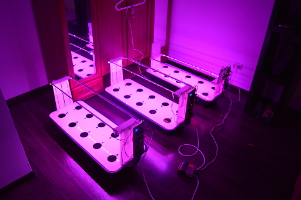
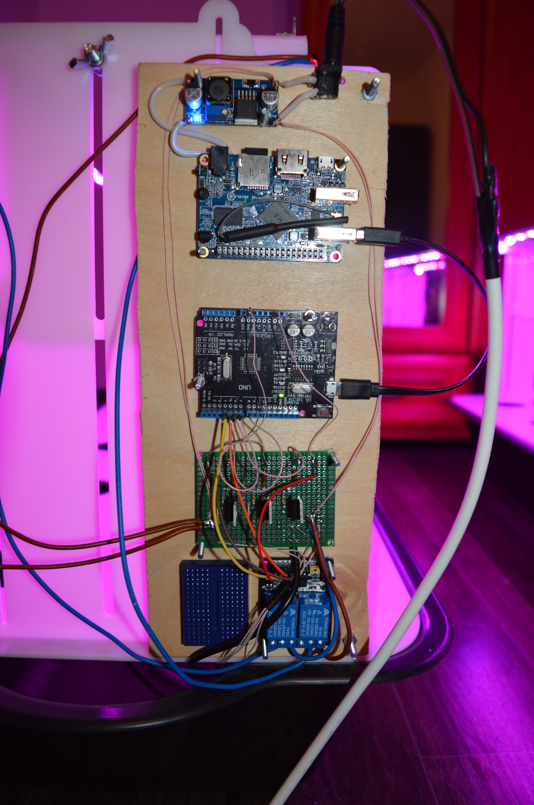
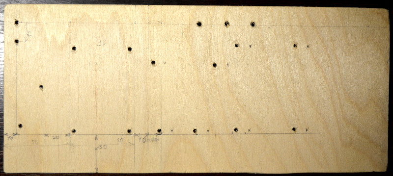
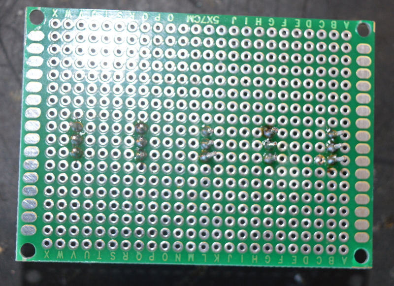
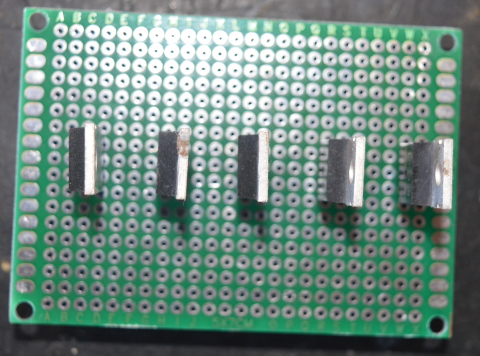
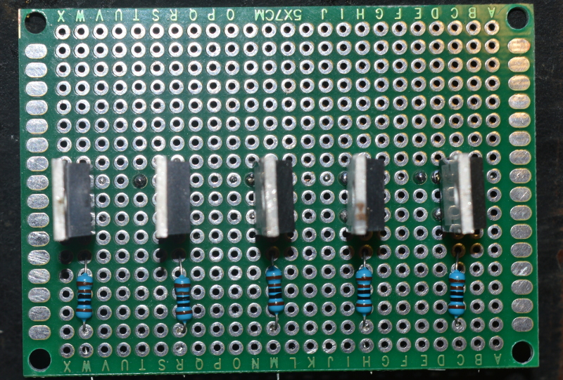
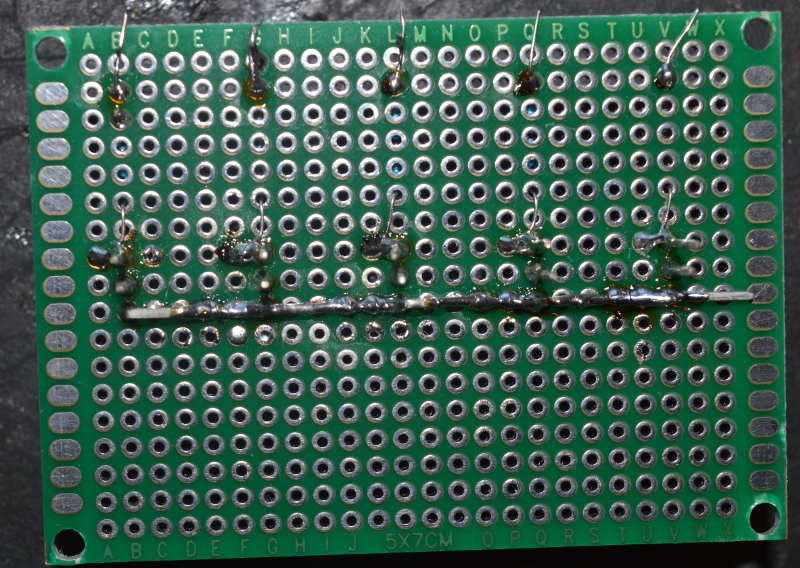
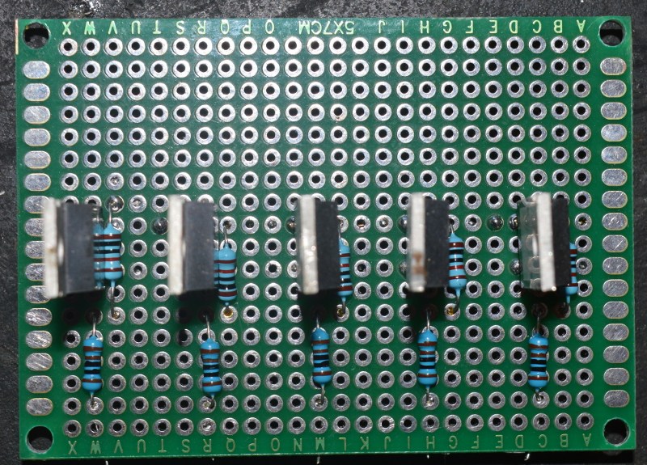
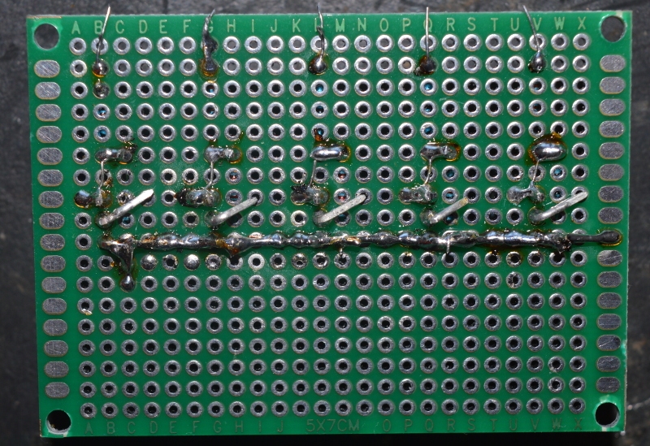
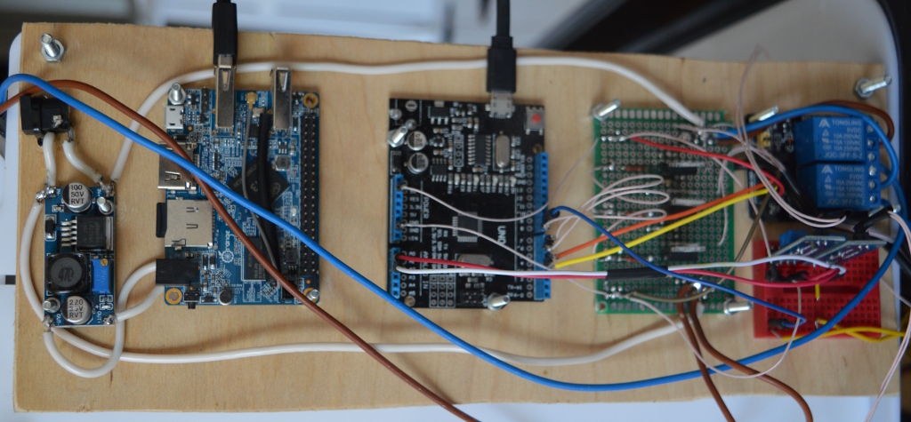

 Полноразмерная фотка по клику.
Полноразмерная фотка по клику.
Красивые фотки версии 0.1. Для новых версий модных фоток с включенным освещением не сделано.
Красным помечено то, что не дописано.
В списке деталей красным отмечено чего не хватает.
В версии установки 0.1 для управления светодиодными лентами используются реле.
В версии 0.2 для управления светодиодными лентами используются
транзисторы.
Датчик уровня воды в корыте не используется.
Используются новые более мощные светодиодные ленты.
В версии 0.3 будут использованы новые перестальтические насосы.
Электронные платы orange pi и arduino uno, макетная плата монтируются на панель.
Панель выпиливается из фанеры и обрабатывается мелкой наждачной бумагой.
Габариты панели:
В панели сверлятся 2 отверстия диаметром 4 мм для крепления к боковой стенке установки.
В боковой стенке(та, что шире) установки сверлятся 2 ответных отверстия диаметром 4 мм.
Для монтажа электронных плат на панели сверлятся отверстия диаметром 3 мм.
Чертеж панели
Фотка панели:
Разъем питания крепится хомутом.
Платы крепятся на
Электрическая схема




Проверяем что транзисторы работают.
При подаче 5В от ардуинки с помощью проводка на затвор транзистора, должны
Для версии 0.1:
Полноразмерная фотка по клику.
Для версии 0.2:
Полноразмерная фотка по клику.
Датчик влажности почвы.
Датчик температуры/влажности воздуха.
Клапана крепятся на панели для горшков снизу.
Для версии 0.3
Датчик уровня крепится на дно корыта. Используется в весрии 0.1 и 0.2
(неакутально в 0.3)
Торец датчика (та часть, на которой магнитное кольцо) зашлифовывается и
датчик приклеивается ко дну корыта ближе к панели с электроникой.
Корыто 1
Панель для горшков 1
Боковая стенка левая 1
Боковая стенка правая (та, что шире) 1
Разъем питания на панель 1
Преобразователь напряжения 12В -> 5В на микросхеме 2596 1
Orange Pi Lite 1
Arduino UNO 1
Макетная плата для пайки 1
Макетная плата беспаячная 1
Резисторы 10к
Резисторы 330Ом
Провод МГТФ
Провод 220
Провод 1мм многожильный
Клапан 2
Помпа 1
Датчик уровня жидкости 1
Датчик влажности почвы 2
Температуры/влажности воздуха 1
Ph датчик 1
м4 x 30 2шт
м3 x 30 20шт
м6 x 20 2шт
м4 4шт
м3 40шт
Гайка барашковая м6 2шт
Список неполный, дполню позже.